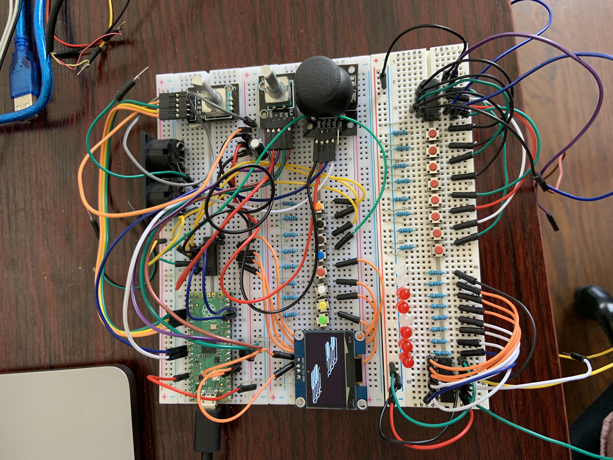

2 - growing pains
5.30.23
Initially, I thought it would be really cool to make an alternative OS for the MKii hardware, not unlike JJOS for the MPC line, but with my huge lack of knowledge on compiling and flashing my own firmware to the SP404mkii, not to mention programming in general, I hit a brick wall. As a side note, custom software and an open-source API for the SP404mkii is still something I think would be amazing. In my ignorance, I turned to hardware: I wanted a sequencer, small enough to be carried with my SP and flexible enough to act as a notebook for sequencing sounds.
A few notes on hardware: I love the pico. I love it because it's very powerful, because it has two cores, but mostly because it's cheap, really well documented, and supported by people who genuinely seem interested in making programming more fun and accessible to everyone.